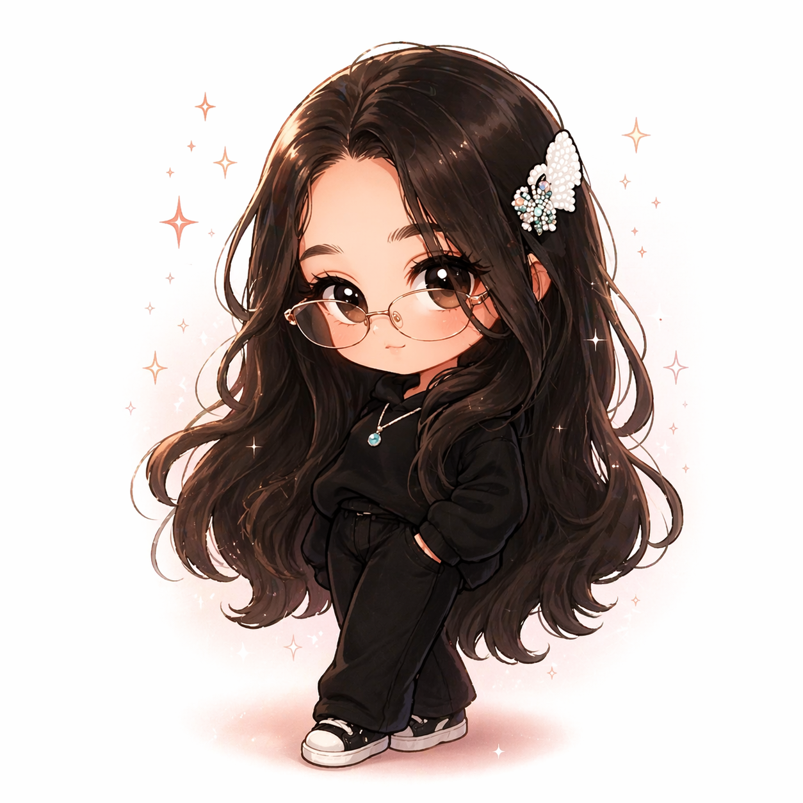

Me presento soy kathia y a veces siento que estoy en una etapa donde todo está cambiando muy rápido. Tengo 16 años y estoy descubriendo muchas cosas sobre mí misma, lo que me gusta y lo que quiero hacer. Me encanta todo lo creativo, especialmente lo que tiene que ver con estilo anime, historias y personajes. De hecho, me imagino viviendo aventuras como en una serie, donde cada día puede ser algo diferente, emocionante o incluso un poco caótico. Soy alguien que también disfruta las cosas simples, como hacer snacks con fruta o preparar algo rico tipo smoothie o frappé. Es como mi forma de relajarme o consentirme un poco. En mi vida social, no es muy interesante ya que suelo ser mas reservada. También tengo un lado creativo muy fuerte: me gusta imaginar, crear, diseñar, incluso pensar en cómo se verían personajes en estilo chibi o cómo sería una historia completa. Siento que podría hacer algo grande con eso algún día, como crear mis propias historias o contenido. En general, estoy en ese punto donde estoy creciendo, aprendiendo y tratando de entender quién soy, mientras disfruto las cosas que me gustan y enfrento los retos que van apareciendo.